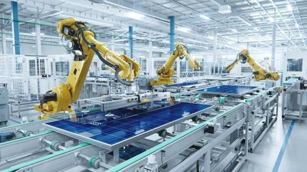

¿Por qué es importante gestionar eficientemente los procesos industriales?
En una empresa manufacturera dedicada a productos plásticos, cada etapa del proceso influye directamente en el éxito del negocio. Cuando los procesos no están bien gestionados, aparecen retrasos en las órdenes de producción, desperdicio de materia prima, productos defectuosos, tiempos muertos en las máquinas y problemas en el control de inventarios. Todo esto genera costos innecesarios que reducen la competitividad y la rentabilidad de la empresa.
Contar con herramientas de Ingeniería Industrial permite diagnosticar estos problemas a tiempo, organizar mejor los recursos, entregar pedidos a tiempo y garantizar que cada producto cumpla con lo que el cliente espera. Una gestión eficiente no solo reduce pérdidas, sino que también crea una empresa más sólida y preparada para crecer.
Conoce las áreas de la Ingeniería Industrial
|
 ProducciónOrganiza recursos para fabricar en las cantidades y plazos establecidos. |

CalidadVerifica que los productos cumplan las especificaciones técnicas y expectativas del cliente. |

LogísticaAdministra materias primas, productos en proceso y productos terminados. |

Lean ManufacturingElimina desperdicios y maximiza el valor entregado al cliente. |

MantenimientoConserva los equipos y evita paradas inesperadas de producción. |

ProductividadMide el desempeño operativo e identifica oportunidades de mejora. |